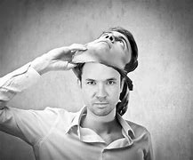

| 9 |
PSICOPATA TOMADOR
DE RIESGOS |
Un psicopata tomador de riesgos es aquel que, con una personalidad tremendamente impulsiva y temeraria, pone su vida en peligro para sentirse vivo. No siente miedo al realizar actos que cualquier otra persona consideraria de alto riesgo. No les importan las consecuencias de sus actos, solo se preocupan por su disciplina y por la constante necesidad de estimulacion. Evidentemente, todo ello va ligado a una insensibilidad que se traslada a muchos ambitos de su vida. |
|
| 10 |
PSICOPATA PRIMARIO |
Un psicopata primario es aquel que cumple mejor con la definicion del trastorno que le da nombre. Su temperamento se encuentra desviado de la normalidad ya desde su infancia, con unos padres que no son capaces de controlar la actitud del hijo. Tambien se utiliza el concepto de “primario” para referirnos a aquellas formas de psicopatia en las que predomina la impulsividad, el narcisismo, la necesidad de atencion, la antisocialidad, la hostilidad, la agresividad y la baja tendencia a la ansiedad. |
|
| 11 |
PSICOPATA SECUNDARIO |
Un psicopata secundario es aquel que se mueve principalmente por la busqueda de placer, premios, recompensas y evitación del dolor. Son similares a los primarios, pero en este caso el perfil psicologico es distinto, pues suelen mostrarse socialmente ansiosos (los primarios no mostraban ansiedad), malhumorados y con baja autoestima. Tienen una baja socializacion y tendencia al retraimiento y a la culpa. De hecho, el remordimiento que sienten al cometer actos negativos puede ser incluso mayor que en una persona “corriente”. |

|
| 12 |
PSICOPATA INHIBIDO
DE PRINCIPIOS |
Un psicopata inhibido es aquel que muestra un bajo puntaje en lo que a trastorno de personalidad se refiere. En otras palabras, controla la psicopatia que padece. Su perfil psicologico es el de una persona timida, aislada, ligeramente ansiosa en situaciones sociales (sin llegar a ser antisociales) y con baja autoestima. |
|